🧩 1. Introducción a Git (local): control de versiones desde cero¶
Descarga de diapositivas
🧠 ¿Qué es Git?¶
Git es un sistema de control de versiones.
Eso significa que Git sirve para:
- llevar el historial de un proyecto (qué cambios se han hecho),
- saber cuándo se hicieron y quién los hizo,
- y poder volver atrás si algo se rompe.
Metáfora: máquina del tiempo
Git es como una máquina del tiempo para tu proyecto: puedes guardar "puntos" y viajar a versiones anteriores.
🧯 ¿Por qué necesitamos control de versiones?¶
Sin Git, cuando programamos suele pasar esto:
- "Antes funcionaba… ¿qué he tocado?"
- "Voy a guardar una copia por si acaso" →
final.zip,final_final.zip,ahora_si.zip - "He mezclado cambios de varias cosas y ya no sé separar lo que hice"
- "He borrado algo importante sin querer"
Git resuelve todo eso porque crea un historial ordenado y recuperable.
🕹️ Qué es un commit (y por qué es tan importante)¶
Un commit es un punto de guardado del proyecto.
Metáfora: "guardar partida"¶
Como en un videojuego:
- estás jugando (programando),
- llegas a un punto estable,
- guardas la partida → haces un commit,
- si luego la lías, vuelves a esa partida.
¿Qué lleva un commit?¶
- una "foto" del estado de los archivos,
- el autor (tu nombre/email),
- la fecha,
- y un mensaje.
Mensajes de commit
Un mensaje debe decir qué has hecho y para qué. Ejemplos buenos:
- "Añade lista inicial de libros"
- "Corrige cálculo del total con descuento"
- "Añade validación de email en registro"
🧺 La idea que más cuesta: staging (la bandeja)¶
Cuando trabajas con Git, no guardas cambios "a lo bruto". Git te obliga (para bien) a pasar por un paso intermedio antes del commit: el staging.
Piensa que Git no funciona como un "guardar" de Word. Funciona más como:
1) trabajo y ensayo (cambio cosas),
2) selecciono lo que quiero guardar como versión,
3) guardo esa versión con un mensaje.
Ese paso 2 es el staging.
🧠 ¿Qué es exactamente el staging?¶
El staging area (también llamado index) es una especie de lista de cambios seleccionados que van a entrar en el próximo commit.
- Todo lo que está en staging = "esto sí lo voy a guardar ahora".
- Todo lo que NO está en staging = "esto todavía no".
Recordatorio
El commit no guarda "lo que tengas en la carpeta", guarda lo que hayas puesto en staging.
🧾 Metáfora: escritorio, bandeja y álbum¶
- Escritorio (working directory): donde editas, pruebas y rompes cosas.
- Bandeja (staging area): donde colocas lo que ya está listo para quedar "registrado".
- Álbum (historial): donde quedan guardadas las versiones (commits).
flowchart LR
W["Escritorio<br/>(editas archivos)"] -->|git add| S["Bandeja<br/>(staging)"]
S -->|git commit| H["Álbum<br/>(historial)"]Traducción a comandos
git add= "pon esto en la bandeja"git commit= "pega lo de la bandeja en el álbum"
🤔 ¿Por qué existe la bandeja?¶
Porque en la vida real los cambios se mezclan.
Imagina que, mientras arreglas una cosa, también tocas otras:
- arreglas un bug en
Pedido.java, - cambias un texto del
README.md, - retocas un CSS porque lo ves feo.
Si haces un commit con TODO mezclado, el historial se vuelve difícil de usar:
- no se entiende qué se hizo,
- si un día quieres deshacer "solo el bug", arrastras lo demás,
- y revisar cambios en equipo se vuelve un lío.
Con staging puedes separar el trabajo en commits con sentido:
Ejemplo
"Ahora guardo el bug. Después guardo el README. Después el CSS."
✅ Ejemplo práctico: commits limpios (uno por idea)¶
Supón que has tocado 3 archivos:
Pedido.java(bug)README.md(texto)styles.css(estilo)
❌ Lo típico que NO interesa¶
Este commit es un "batiburrillo": mezcla cosas y luego cuesta entenderlo o deshacerlo.
git add .
git add . añade al área de staging TODOS los documentos nuevos o modificados desde el último commit.
✅ Lo recomendable con staging¶
1) Guardas solo el bug
2) Guardas el README
3) Guardas el CSS
Qué ganas con esto
- Historial claro (se entiende de un vistazo).
- Más fácil deshacer cambios "por partes".
- Revisiones más rápidas y seguras.
🔍 ¿Cómo sé qué está en la bandeja y qué no?¶
Usa git status.
- Changes to be committed → está en staging (bandeja).
- Changes not staged for commit → está modificado, pero fuera de staging (escritorio).
| Bash | |
|---|---|
Regla de oro
Antes de commitear, mira git status para comprobar qué vas a guardar.
🎯 Idea final para que se te quede¶
Staging = elegir.
Git te da un botón mental de:
- "esto sí entra en el próximo commit"
- "esto todavía no"
Y esa es la razón por la que Git ayuda a trabajar ordenado incluso cuando tú vas tocando cosas sobre la marcha.
🧩 Estados de un archivo (lo que te cuenta git status)¶
Los archivos en Git suelen estar en estos estados:
- Untracked: Git ve el archivo, pero aún no lo sigue (es nuevo).
- Modified: lo has cambiado desde el último commit.
- Staged: lo has puesto en la bandeja para el próximo commit.
- Committed: ya está guardado en el historial.
flowchart LR
U[Untracked] -->|git add| S[Staged]
M[Modified] -->|git add| S
S -->|git commit| C[Committed]
C -->|editar| MEjemplo rápido
- Creas
hola.txt→ untracked git add hola.txt→ stagedgit commit ...→ committed- Editas
hola.txt→ modified
🧰 Instalación de Git (si no lo tienes)¶
Antes de hacer nada, necesitamos que el comando git exista en tu ordenador.
1) Comprobar si ya está instalado¶
Abre una terminal y ejecuta:
| Bash | |
|---|---|
- ✅ Si te devuelve algo tipo
git version 2.4x.x, ya lo tienes. - ❌ Si sale un error tipo "command not found", "no se reconoce…", etc., hay que instalarlo.
¿Qué significa la versión?
No necesitas la última. Si te funciona git --version, para clase te vale.
🪟 Windows¶
La opción más sencilla es Git for Windows (incluye Git Bash).
Instala Git for Windows desde aquí:
Git for Windows (instalación oficial)
Qué instalar y qué te aporta
- Instalas Git.
- Te aparece Git Bash, una terminal "tipo Linux" que va genial para empezar.
Después de instalar
- Abre Git Bash (mejor que PowerShell al principio).
- Comprueba:
| Bash | |
|---|---|
Si en PowerShell no funciona
A veces Git está instalado, pero la terminal no lo encuentra por el PATH. La prueba rápida:
- Si en Git Bash funciona y en PowerShell no, para el curso usa Git Bash.
- Si quieres arreglarlo, revisa el instalador y asegúrate de seleccionar que Git se añada al PATH.
Carpetas sincronizadas
Evita crear repositorios dentro de OneDrive/Google Drive/iCloud: pueden aparecer cambios "fantasma" al cambiar de versión.
🍎 macOS¶
En macOS, a menudo Git viene "a medio instalar".
Prueba:
| Bash | |
|---|---|
- Si macOS te pide instalar Command Line Tools, acepta.
- Cuando termine, vuelve a ejecutar
git --version.
🐧 Linux (Debian/Ubuntu)¶
⚙️ Configuración básica (una vez)¶
Git guarda en cada commit quién lo hizo. Para eso necesita tu nombre y email.
👤 1) Nombre y email (global)¶
| Bash | |
|---|---|
Comprueba la configuración:
| Bash | |
|---|---|
Muy típico
Si Git te dice "Please tell me who you are…", es que falta user.name o user.email.
🌿 2) Rama por defecto: main¶
Hoy lo más común es usar main como rama principal (en vez de master).
| Bash | |
|---|---|
Esto afecta a repos nuevos que crees a partir de ahora.
🧾 3) Editor por defecto (opcional, recomendado)¶
A veces Git necesita que escribas un mensaje (por ejemplo, en operaciones que verás más adelante).
Para que no se abra un editor raro, puedes fijar uno.
| Bash | |
|---|---|
Primero crea el lanzador de línea de comandos (menú Tools → Create Command-line Launcher), y luego:
| Bash | |
|---|---|
git config --global core.editor "'C:/Program Files/JetBrains/IntelliJ IDEA/bin/idea64.exe' --wait".
En la práctica usarás poco esta opción con IntelliJ: la propia ventana de commit del IDE ya te deja escribir el mensaje sin pasar por un editor externo.
🧱 Crear un repositorio: git init¶
Para que Git empiece a guardar el historial de un proyecto, primero necesitas un repositorio: una carpeta "con Git activado".
✅ Paso 1) Entra en la carpeta del proyecto¶
| Bash | |
|---|---|
✅ Paso 2) Inicializa Git¶
| Bash | |
|---|---|
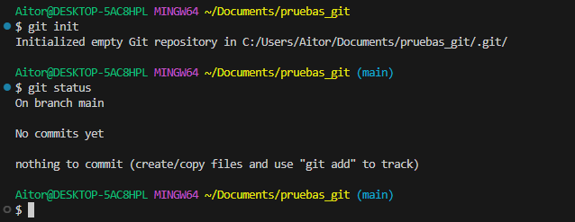
Qué estás viendo en la captura
- Git confirma que ha creado un repositorio vacío en la carpeta
.git/. -
A continuación se ejecuta
git statusy aparece:On branch main→ estás en la ramamain.No commits yet→ todavía no has hecho ningún commit.nothing to commit (create/copy files and use "git add" to track)→ aún no hay archivos preparados para guardar.
¿Qué es la carpeta .git?
Es la "memoria" del repositorio: ahí Git guarda historial, ramas y metadatos.
Warning
- No borres ni edites
.gita mano. - Si eliminas
.git, el proyecto pierde el historial (aunque los archivos sigan).
🧭 Los comandos esenciales¶
La idea no es memorizar, sino entender qué hace cada comando y qué deberías ver en pantalla.
1) git status — el "¿qué está pasando?"¶
git status te dice en qué situación está tu repo y en qué estado están tus archivos.
| Bash | |
|---|---|
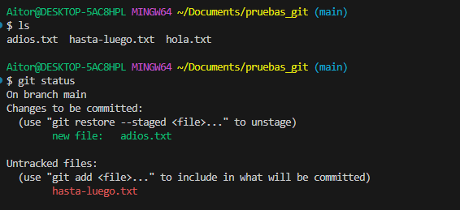
Qué estás viendo en la captura
- Se ejecuta
lsy aparecen 3 archivos:adios.txt,hasta-luego.txt,hola.txt. - Luego,
git statusmuestra dos bloques importantes:
1) Changes to be committed (en staging / bandeja)
new file: adios.txt→adios.txtestá preparado para el próximo commit.
2) Untracked files (Git los ve, pero todavía NO los sigue)
hasta-luego.txtaparece como untracked: existe en la carpeta, pero aún no lo has añadido congit add.
Regla de oro
Antes de hacer git add o git commit, mira git status para confirmar qué vas a guardar.
2) git diff — el "¿qué ha cambiado exactamente?"¶
git diff muestra cambios línea a línea respecto al último commit (o respecto al staging, según el caso).
| Bash | |
|---|---|
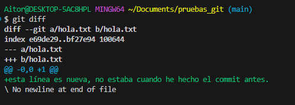
Qué estás viendo en la captura
- Git te enseña el archivo que cambió:
hola.txt. -
La línea que empieza por
+es lo nuevo que has añadido, por ejemplo:+esta linea es nueva, no estaba cuando he hecho el commit antes.
¿Por qué usar diff?
- Para revisar cambios antes de guardarlos.
- Para comprobar que no has tocado algo "sin querer".
3) git add — "pongo esto en la bandeja (staging)"¶
git add no guarda nada todavía: solo prepara archivos para el próximo commit.
Ejemplo (lo típico en tu caso):
| Bash | |
|---|---|
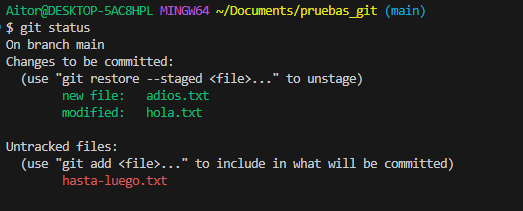
Qué estás viendo en la captura (después del add)
-
En Changes to be committed aparecen:
new file: adios.txt→adios.txtestá en staging.modified: hola.txt→ los cambios dehola.txttambién están en staging.
-
En Untracked files sigue apareciendo:
hasta-luego.txt→ sigue sin estar "bajo control" porque no lo has añadido.
Cuidado con git add .
git add . mete en staging todo lo nuevo/modificado.
Al principio, es mejor añadir archivo a archivo para no llevarte cosas sin querer.
4) git commit — "guardo la partida"¶
git commit guarda en el historial lo que esté en staging.
| Bash | |
|---|---|
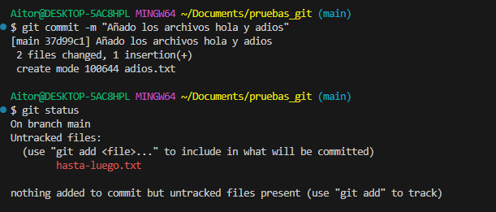
Qué estás viendo en la captura
-
Git confirma el commit:
- aparece el id (hash corto) del commit, y el mensaje.
2 files changed...ycreate mode ... adios.txt→ creóadios.txten el historial.
-
Luego se ejecuta
git statusy ocurre algo clave:hasta-luego.txtsigue en Untracked files → no se ha guardado porque no estaba en staging.
Idea clave
Un commit guarda solo lo que tú has puesto en staging con git add.
5) git log — "muéstrame el historial"¶
Para ver los commits que has hecho:
| Bash | |
|---|---|
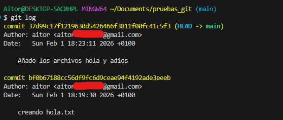
Qué estás viendo en la captura
- Los commits aparecen en orden, el más reciente arriba.
HEAD -> mainindica que estás en la ramamainy queHEADapunta al último commit.
Cada commit tiene un identificador único llamado hash — una cadena larga de letras y números como a3f8c21d9e4b.... No hace falta usarlo entero; con los 7 primeros caracteres es suficiente.
La versión más usada en el día a día es con --oneline, que muestra una sola línea por commit:
| Bash | |
|---|---|
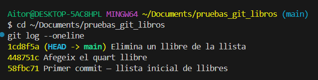
El hash abreviado
Los 7 caracteres del inicio de cada línea (1cd8f5a, 448751c…) son los que usarás después en comandos como git show o git revert.
♻️ "Me he equivocado": descartar cambios (git restore)¶
A) Descartar cambios de un archivo (volver al último commit)¶
Si modificas hola.txt y no quieres esos cambios:
| Bash | |
|---|---|
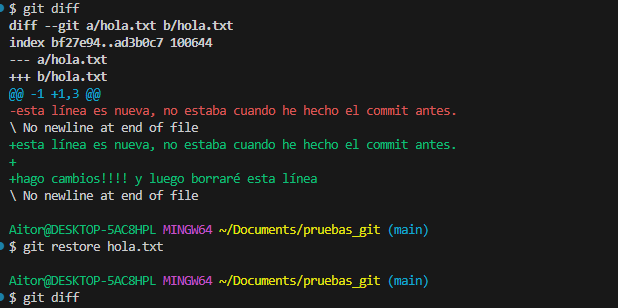
Qué estás viendo en la captura
1) Primero se ejecuta git diff y se ven varias líneas nuevas (+...) en hola.txt.
2) Luego se ejecuta git restore hola.txt.
3) Al volver a ejecutar git diff, no sale nada → significa que el archivo ha vuelto al estado del último commit.
Danger
git restore borra cambios no guardados en commits.
Si esos cambios te importan, guarda antes (commit) o copia el archivo.
B) Quitar un archivo del staging (sin borrar sus cambios): git restore --staged¶
Esto sirve cuando has hecho git add por error (lo metiste en staging), pero aún no has hecho commit.
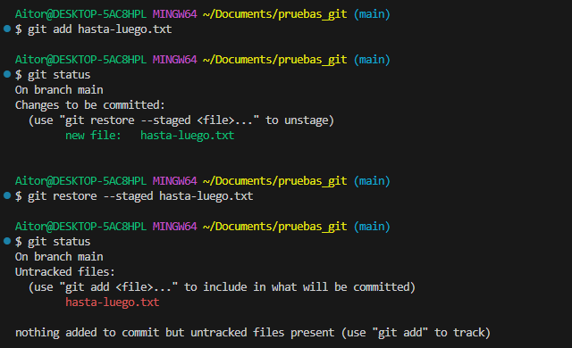
Qué estás viendo en la captura
1) git add hasta-luego.txt → lo mete en staging.
2) git status muestra:
new file: hasta-luego.txten Changes to be committed.
3) git restore --staged hasta-luego.txt → lo saca del staging.
4) git status vuelve a mostrarlo como Untracked files.
Truco mental
restore --staged= "saca de la bandeja"restore(sin--staged) = "deshaz cambios del archivo"
⏪ Volver a una versión anterior¶
Esta es una de las razones principales por las que existe Git: poder recuperar el estado del proyecto en cualquier punto del historial. La pregunta clave antes de actuar es: ¿qué quiero exactamente?
flowchart TD
Q{"¿Qué necesitas?"} --> A["Ver qué cambió un commit"]
Q --> B["Recuperar un archivo concreto"]
Q --> C["Deshacer un commit entero"]
A --> A1["git show hash"]
B --> B1["git restore --source=hash archivo"]
C --> C1{"¿Ya has subido\neste repo a GitHub?"}
C1 -->|"Sí"| C2["git revert — seguro,\nno borra historial"]
C1 -->|"No, es local"| C3["git reset — potente,\npuede borrar historial"]
style C2 fill:#e8f5e9,stroke:#388e3c,color:#1b5e20
style C3 fill:#fff3e0,stroke:#f57c00,color:#e65100
style A1 fill:#e3f2fd,stroke:#1976d2,color:#0d47a1
style B1 fill:#e3f2fd,stroke:#1976d2,color:#0d47a1Paso previo: ver el historial¶
Antes de hacer cualquier cosa, necesitas saber qué commits tienes y cuáles son sus hashes:
| Bash | |
|---|---|
Esos 7 caracteres al inicio de cada línea (1cd8f5a, 448751c…) son el hash abreviado — el identificador único de cada commit. Los vas a necesitar para todos los comandos que siguen.
¿Qué es HEAD?
HEAD es una etiqueta que señala el commit en el que estás ahora — normalmente el último. HEAD~1 es el anterior, HEAD~2 es dos atrás. Es una forma de referirse a commits sin escribir el hash exacto.
Ver qué cambió en un commit concreto¶
Antes de deshacer nada, conviene ver exactamente qué hizo ese commit:
| Bash | |
|---|---|
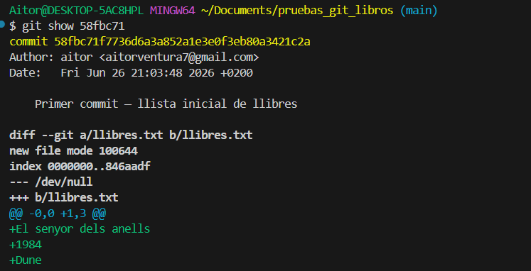
Las líneas con + son lo que ese commit añadió. Las líneas con - son lo que eliminó. Mientras solo ejecutas git show, no cambias nada en el proyecto.
Opción A — Recuperar un archivo a como estaba antes¶
Esto es útil cuando un archivo concreto ha empeorado y quieres recuperarlo a una versión anterior, sin tocar el resto del proyecto.
| Bash | |
|---|---|
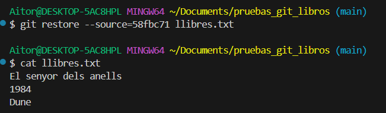
El archivo queda exactamente como estaba en el commit 58fbc71. Aparece como modified en git status — los cambios están en tu carpeta de trabajo, pero el historial no ha cambiado. Puedes revisarlo y hacer un git commit si quieres guardar esa recuperación.
Esto no deshace el commit
Solo trae una versión antigua del archivo a tu carpeta. El historial no cambia. Para guardarlo definitivamente, tienes que hacer git add y git commit después.
Opción B — Deshacer un commit completo (git revert)¶
git revert crea un commit nuevo que deshace exactamente los cambios de un commit anterior. Es la opción más segura: no borra nada del historial, solo añade un paso nuevo que revierte lo que se hizo.
| Bash | |
|---|---|
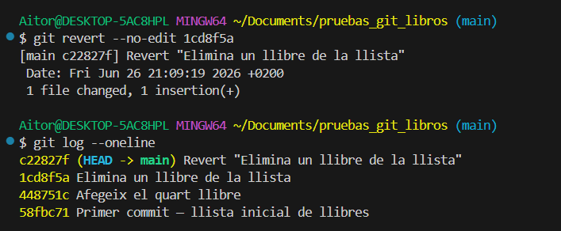
Git genera el mensaje del commit de reversión automáticamente. El historial queda así — el commit original sigue ahí, pero neutralizado:
gitGraph
commit id: "Primer commit"
commit id: "Afegeix el quart llibre"
commit id: "Elimina un llibre"
commit id: "Revert: Elimina un llibre" type: REVERSECuándo usar revert
Siempre que hayas subido el repo a GitHub o trabajado con otras personas. Al no reescribir el historial, no crea conflictos con el trabajo de los demás.
Opción C — Mover el repo a un commit anterior (git reset)¶
git reset mueve HEAD hacia atrás en el historial. Es más potente que revert porque borra commits — como si nunca hubieran existido. Solo se recomienda cuando el repo es estrictamente local y no lo ha visto nadie más.
Situación de partida — los tres ejemplos usan un repo con estos 3 commits:
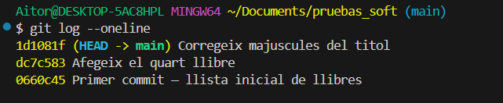
El commit más reciente ("Corregeix majuscules del titol") es el que va a desaparecer con el reset. Lo que cambia entre variantes es adónde van sus cambios.
El commit desaparece, pero Git deja los cambios ya preparados para el siguiente commit — como si ya hubieras hecho git add. Solo te faltaría escribir git commit.
Caso típico: has hecho un commit con un mensaje mal escrito. Con --soft deshaces el commit, el archivo queda listo para commit y puedes volver a hacer git commit -m "mensaje correcto" sin tocar nada más.
| Bash | |
|---|---|
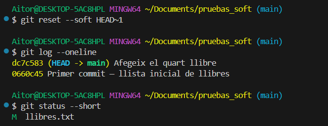
git status --short muestra M llibres.txt — la M está en la zona de staging. No hace falta git add.
El commit desaparece y los cambios vuelven al archivo, pero Git no los prepara para el siguiente commit. Es como si nunca hubieras hecho git add.
Caso típico: quieres deshacer el commit y revisitar los cambios desde cero — decidiendo qué añadir y qué dejar fuera. Necesitas hacer git add de nuevo antes de poder hacer commit.
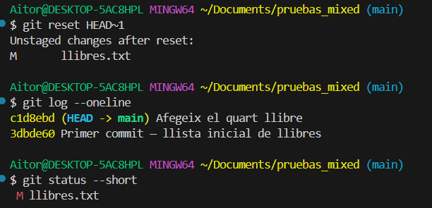
Git avisa: Unstaged changes after reset. git status --short muestra M llibres.txt — la M está en la zona de trabajo (fuera de staging). Necesitas git add antes de poder hacer commit.
El commit desaparece y los cambios se borran definitivamente. El proyecto vuelve exactamente al estado del commit anterior.
| Bash | |
|---|---|
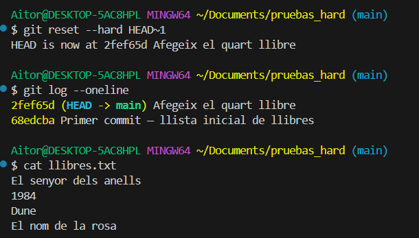
Git confirma con HEAD is now at .... El log pasa a 2 commits. cat llibres.txt muestra el archivo sin la corrección de mayúsculas — ese cambio ha desaparecido para siempre.
Sin vuelta atrás
Con --hard los cambios del commit eliminado se pierden para siempre. No hay papelera ni deshacer. Úsalo solo si estás completamente seguro.
La diferencia entre las tres variantes se resume en una sola pregunta: ¿adónde van los cambios del commit eliminado?
| Variante | ¿Adónde van los cambios? | git status muestra |
¿Recuperable? |
|---|---|---|---|
--soft |
Staging | M archivo (M en zona staging) |
Sí |
--mixed |
Escritorio de trabajo | M archivo (M en zona trabajo) |
Sí |
--hard |
Se borran | (nada) | No |
¿Cuál uso?¶
| Situación | Comando recomendado |
|---|---|
| Quiero ver qué cambió en un commit concreto | git show <hash> |
| Quiero recuperar un archivo a una versión anterior | git restore --source=<hash> <archivo> |
| Quiero deshacer un commit sin borrar historial | git revert <hash> |
| Quiero rehacer el último commit (solo local) | git reset --soft HEAD~1 |
| Quiero borrar el último commit y sus cambios (solo local) | git reset --hard HEAD~1 |
🚫 .gitignore: cosas que NO queremos guardar en el historial¶
El archivo .gitignore sirve para decirle a Git qué archivos o carpetas debe ignorar — aunque estén en la carpeta del proyecto, Git actuará como si no existieran.
Esto es útil para no incluir en el historial cosas que no tienen sentido versionar: archivos generados automáticamente, credenciales, binarios compilados o carpetas temporales.
Para crearlo, simplemente crea un archivo llamado .gitignore en la raíz del repositorio y añade reglas:
| Text Only | |
|---|---|
Cada línea es un patrón:
- *.log → ignora cualquier archivo que acabe en .log
- /tmp/ → ignora la carpeta tmp en la raíz del repo
- .idea/ → ignora la carpeta de configuración de IntelliJ
Solo afecta a lo que aún no está en el historial
Si un archivo ya ha sido commiteado, añadirlo al .gitignore no lo elimina del historial. Para eso habría que usar git rm --cached <archivo> — un paso extra que veremos más adelante.
Plantillas listas para usar
En gitignore.io puedes generar un .gitignore completo para tu tipo de proyecto (Java, Node, Python…) con un solo clic.
✅ Ideas clave (muy resumidas)¶
Abrir resumen
Flujo habitual
git init— crea un repositorio local (aparece.git/).git status— qué está en staging, qué modificado y qué untracked.git diff— qué cambió exactamente, línea a línea.git add <archivo>— mete archivos en staging (bandeja).git commit -m "mensaje"— guarda solo lo que esté en staging.git log/git log --oneline— historial de commits.
Descartar cambios
git restore <archivo>— deshace cambios del escritorio (vuelve al último commit).git restore --staged <archivo>— saca del staging sin borrar los cambios.
Volver a una versión anterior
git show <hash>— ver qué cambió en un commit concreto.git restore --source=<hash> <archivo>— recuperar un archivo a una versión anterior.git revert <hash>— deshacer un commit creando uno nuevo (seguro, no borra historial).git reset --soft HEAD~1— deshacer el último commit, cambios en staging.git reset --hard <hash>— volver a un punto borrando todo lo posterior (⚠ irreversible).
Ignorar archivos
.gitignore— lista de archivos/carpetas que Git debe ignorar.